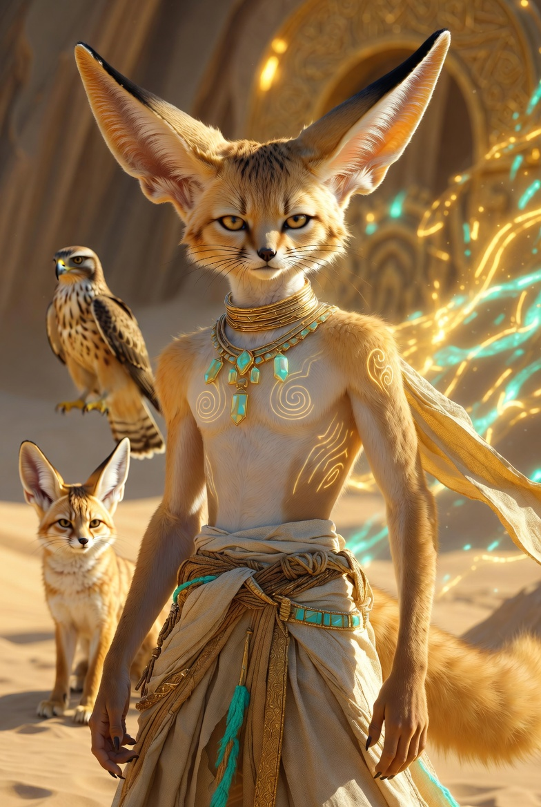
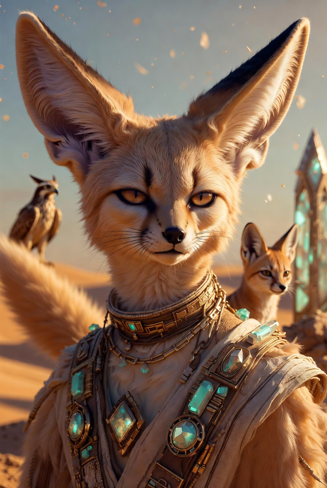

Рури Песчаный Ветер
Фенек
- Возраст
- 28–30 лет; После открытия Врат — 38–40 лет
- Пол
- Мужской
- Рост
- 165–168 см
- Специальность
- Великий Магистр Торговли, Хранитель Границ Между Мирами, мастер-зверолов и укротитель легендарных существ. Основатель и глава сети заповедников «Оазис». Специалист по уходу, приручению и сохранению редких и магических животных.
Внешность (кратко)
Стройный фенек с густой песочно-золотистой шерстью, большими выразительными ушами и пушистым хвостом. Янтарно-золотые глаза, которые светятся серебристым светом в моменты сильных эмоций или использования силы. На теле иногда проявляются древние пустынные узоры в виде светящихся песчаных вихрей. Носит практичную, но изысканную одежду в пустынном стиле с элементами хрустальной отделки и ошейниками-печатями высокого ранга. Рядом с ним почти всегда присутствуют верные спутники — лисица Ния и ястреб Кайро.
Предыстория
Начинал как скромный уличный торговец травами и алхимическими ингредиентами в Алхимическом квартале Золотого Круга, владелец маленькой лавки «Пустынный ветер». Рос в пустыне Харр, не зная своего истинного происхождения. После встречи с караваном Мастера Тиаго и событий на Железном Рынке узнал, что является потомком древнего Дома Песчаной Бури с Хрустальных островов. Прошёл путь от бедного торговца до уважаемого мастера, а затем — до одного из ключевых наследников древних родов. Укротил легендарную Песчаную Химеру Шаи, открыл Хрустальные Врата и стал одним из архитекторов соединения двух миров.
Характер
Добрый, сострадательный и глубоко заботливый, особенно по отношению к животным и слабым. Спокоен и рассудителен, но в критические моменты проявляет твёрдую решимость и смелость. Ценит гармонию, равновесие и свободу живых существ. Верен друзьям и семье, немного застенчив в личных вопросах, но обладает тихой внутренней силой и мудростью. Не жаден — всегда готов помогать и делиться знаниями. После благословения Изначальной стал ещё более умиротворённым и гармоничным.
Особая способность
Глубокая духовная и ментальная связь с животными и магическими существами. Может понимать их язык, чувствовать эмоции и нужды на большом расстоянии, устанавливать истинное приручение через «танец душ». После союза с Изначальной (Лираной) и Арианной его связь усилилась до уровня, позволяющего ощущать всех живых существ в радиусе мили и создавать небольшие порталы с помощью Шаи. Также обладает лёгким контролем над песчаными бурями и пустынной магией своего древнего дома.
Positive Prompt (для генерации):
masterpiece, best quality, ultra-detailed, 8k, anthropomorphic male fennec fox, 28-30 years old, slender and agile build, height 165-168 cm, dense sandy-golden fur with soft gradients, very large expressive ears with black tips, big fluffy tail, amber-golden eyes that glow with silver light, ancient glowing sand swirl patterns on body, calm and kind expression, gentle wise look, wearing practical yet elegant desert-style clothing with crystal accents, high-rank seal collars, flowing fabrics in beige, gold and turquoise tones, standing confidently, surrounded by magical aura of sand and wind, small desert fox Niya and hawk Kairo next to him, background of golden desert with ancient crystal gates and oases, soft warm lighting, cinematic atmosphere, highly detailed fur texture, realistic anatomy, perfect hands, sharp focus
Negative prompt (для генерации:)
lowres, bad anatomy, bad hands, deformed, mutated, extra limbs, missing limbs, blurry, low quality, worst quality, text, watermark, signature, error, cropped, jpeg artifacts, compression artifacts, ugly, disfigured, morbid, gross proportions, malformed limbs, fused fingers, cartoon, anime, 3d render, cgi, plastic skin, doll-like, overexposed, underexposed, grainy, noisy, young child, loli, shota, underage, nsfw, nude, exposed, erotic pose
Flux Positive Prompt (для генерации):
A highly detailed cinematic portrait of RuRi the Sand Wind, an anthropomorphic male fennec fox around 30 years old, slender and graceful build, 167 cm tall. He has luxurious dense sandy-golden fur, enormous expressive ears with dark tips, a very large fluffy tail, and piercing amber-golden eyes that subtly glow with silver light. Ancient glowing sand vortex patterns occasionally appear on his fur. He wears elegant yet practical desert adventurer clothing with crystal embellishments and high-rank seal collars in beige, gold and turquoise colors. Calm, kind and wise expression, gentle smile. Always accompanied by his loyal companions: a small graceful desert fox named Niya and a proud hawk named Kairo. Soft warm desert lighting, magical sand particles floating in the air, ancient crystal gates and oases in the background. Masterpiece, intricate fur details, perfect anatomy, sharp focus, cinematic composition, natural colors, highly realistic yet fantastical atmosphere.
Flux Negative Prompt (для генерации):
blurry, low quality, deformed, bad anatomy, extra limbs, fused fingers, mutated hands, poorly drawn face, bad proportions, text, watermark, logo, signature, cartoon, anime style, 3d render, plastic, doll, child, underage, young boy, loli, nude, nsfw, erotic, sexual pose, exposed genitals